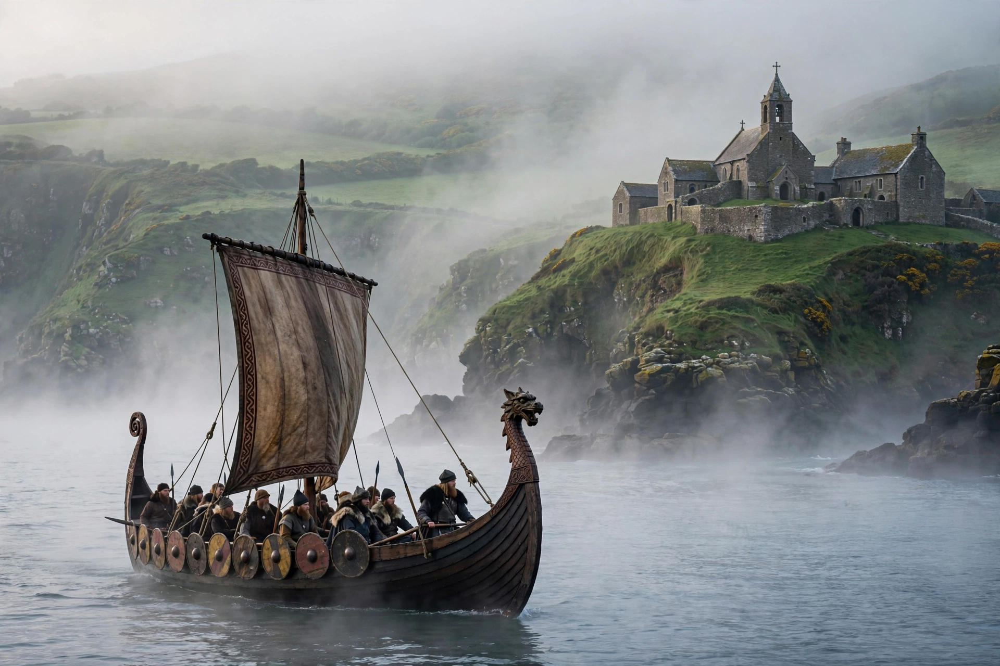

Viking activity in the British Isles
| Viking activity in the British Isles | |
 | |
| Period | 793 – 1066 |
|---|---|
| First major raid | Lindisfarne, 793 |
| Key regions | Danelaw, Dublin, York (Jórvík), Orkney, Hebrides |
Viking activity in the British Isles spans the period from the first recorded raid on the monastery of Lindisfarne in 793 to the Norwegian invasion defeated at Stamford Bridge in 1066. Scandinavian seafarers raided, traded, and ultimately settled large parts of England, Scotland, Ireland, and Wales, profoundly shaping their languages, place-names, and political geography.
Raiding phase
Early attacks targeted wealthy, undefended monasteries such as Lindisfarne (793), Jarrow, and Iona. Fleets grew in size through the early 9th century, overwintering on islands such as Thanet and Sheppey and striking deep inland along rivers.
Conquest and settlement
In 865 the "Great Heathen Army" landed in East Anglia and over the following years conquered Northumbria, East Anglia, and eastern Mercia; only Wessex under Alfred the Great held out. The resulting settlement zone in northern and eastern England became known as the Danelaw. In Ireland, Vikings founded Dublin (841) and other coastal towns, while Norse settlers colonised Orkney, Shetland, the Hebrides, and parts of the Scottish mainland.
Later period
After a relatively quieter 10th century, renewed large-scale raiding under Sweyn Forkbeard culminated in the Danish conquest of England in 1013–1016 and the North Sea empire of Cnut. The final major Norse intervention came in 1066, when Harald Hardrada of Norway invaded and was killed at Stamford Bridge, weeks before the Norman Conquest.
See also
Sweyn Forkbeard · Harald Hardrada · Varangians · Æthelred the Unready
Recreated from memory as a standalone page.